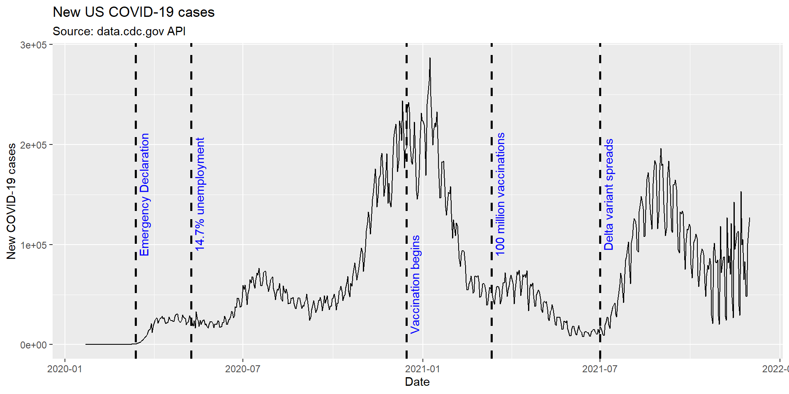
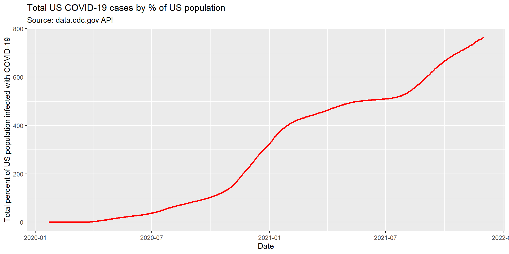
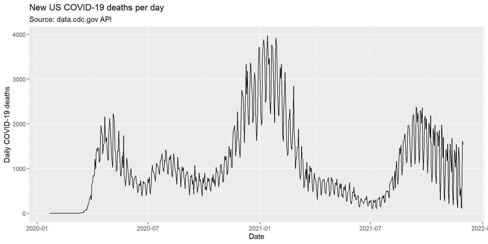
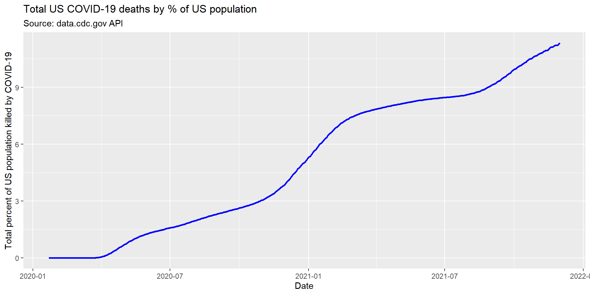

PM566 Final Project
Chris Hanson
How has COVID-19 affected the US substance abuse crisis?
Introduction
Drug overdose deaths in the United States have been rising steadily since the turn of the century, and a significant increase in this trend has been observed since the mid-2010’s. Public discourse around this tragedy led to cultural and political changes which appeared to have slowed the trend around 2018. Then, in March 2020, the COVID-19 pandemic led to an upheaval in nearly every aspect of daily life, resulting in drastic changes to the way we work, socialize, and interact with society at large.
Such a fundamental change in the way we live our lives led to universally destabilizing experiences. To slow the spread of the virus, most public places of congregation were shut down, leading to widespread loss of jobs and a crash of the economy. Those with job security soon found new ways to work through the pandemic, and those without it found themselves without a job and an income.
The category of person most likely to be debilitated by the COVID-19 pandemic correlates with the type of person most vulnerable to experiencing drug addiction. Substance abuse is associated with unemployment or underemployment, lack of career opportunities, social isolation, mental health issues, and homelessness. As COVID-19 has undeniably contributed to each of these factors, an investigation into the pandemic’s effect on the substance abuse crisis is warranted.
Preliminary Results
A timeline:
COVID-19 was first detected in the USA on January 17, 2020, in Washington State. By March 13, 2020, President Trump had declared a nationwide emergency, and 2 days later, schools and restaurants began to shut down. By May 9th, 2020, the unemployment rate hit 14.7%, the worst rate since the Great Depression. By September 2020, the US COVID-19 death toll surpassed 200,000, and by January 18, 2021, it had doubled to 400,000. On December 14th, 2020, the initial phase of the vaccination program began, and by March 13, 2021, the US had surpassed 100 million vaccinations administered. By July 1st, 2021, the delta variant had become detected in all 50 US States.

This timeline helps provide a framework for interpreting the following simple plots:
Some Temporary Plots
Tab 1

Tab 2

Tab 3

Tab 4

{-}